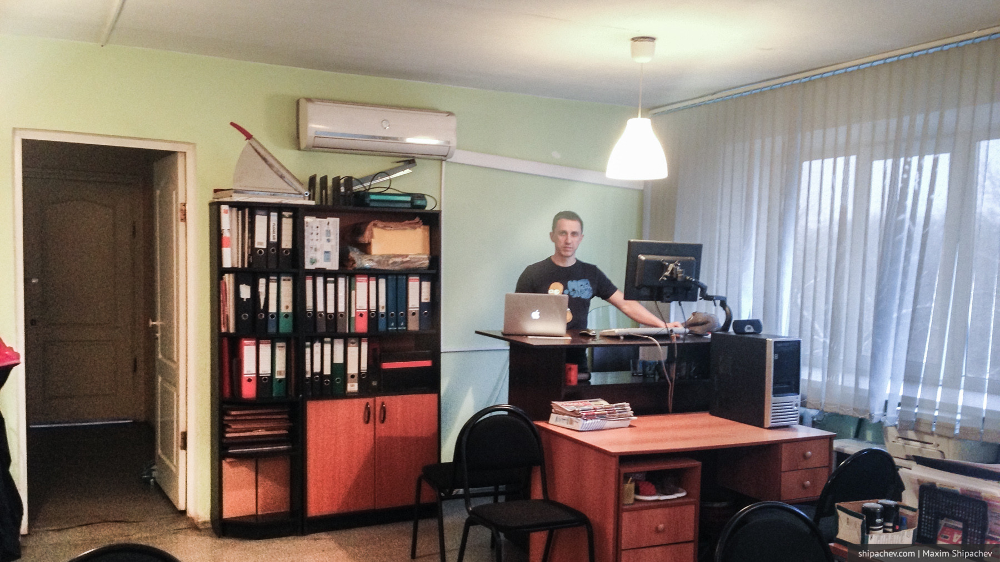
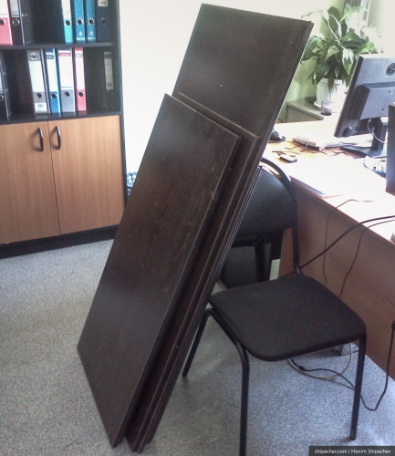
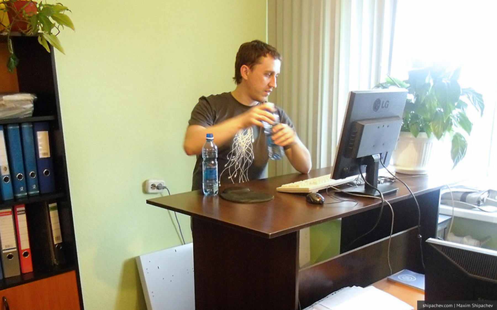

Больше 4 лет назад, в марте 2011 года, я озадачился вопросом работы стоя. Просиживать штаны на работе я никогда не любил, надоело это делать и в прямом смысле.
В затею мало кто из окружающих верил, несмотря на то, что работающие стоя люди всё же существуют. Вряд ли у вас получится легко «встать» на работе, если вы работаете по найму в бухгалтерии или маркетинге. Мне с этим было легче.
Теперь, по прошествии 4 лет, можно подвести некоторые итоги.

Плюсы работы стоя
— При работе стоя задействованы мышцы спины и ног. Учитывая, что мышцы ног потребляют много энергии, вы будете худеть прямо на работе. Если, конечно, не компенсировать это чаями с конфетами.
— Проще держать осанку, если верно подобрать высоту стола.
— Живот не складывается на колени, передняя стенка живота находится в тонусе, пузо — бич офисного планктона мужского пола — не растёт (в теории).
— Стоя сложнее бездельничать.
— Это прикольно. Когда ко мне приходят люди, я им так и говорю «проходите, вставайте». Люди подходят к столу и мы разговариваем стоя.
Минусы работы стоя
— Нагрузка на ноги. Всё-таки стоять по 8 часов вряд ли полезно для вашего варикозного расширения вен. Я, когда приходится работать подолгу, иногда сажусь повтыкать в телефон минут на 15. Если ты куришь, делай это сидя на корточках.
— Стоя сложнее бездельничать.
— Это прикольно. Чаще всего, когда речь идёт о серьёзном деле (сделка от 5 тысяч рублей) мне приходится напрашиваться в офис к контрагенту или встречаться в кафе
Главным минусом я бы назвал отсутствие таких столов в продаже. В интернете есть фотки, где люди колхозят и устанавливают на обычный стол маленький столик из Икеи, но хотелось чего-то посерьёзней. Пришлось делать стол для работы стоя своими руками. Вот этими вот. Свой стол я спроектировал и изготовил сам, заказав распил ЛДСП по своим же чертежам.
Распил с листом обошёлся тогда в 2 с небольшим тысячи рублей, но это цены 2011 года.

Я сэкономил и не заказал сверление отверстий под евровинты. Просверлить отверстие в ламинате можно и самостоятельно, но, во-первых, понадобится специальное сверло, во-вторых чтобы точно наметить отверстия нужно быть мастером геометрии и пространственного мышления. Одно отверстие стоило тогда 50 рублей, лучше, если это сделают там же где будут распиливать ЛДСП.

Ещё через пару лет, мой брат сделал себе такой же, только белый, и теперь у нас в офисе два стола для работы стоя.